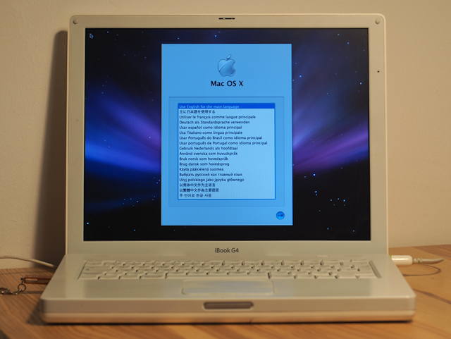

For scientific reasons I was recently forced to figure out how to install an older OS X version on my iBook G4. This is easy as long as you still know where your original installer DVD is, but if like me you are stuck with only an .iso backup there are really only two options:
While it sounds trivial today, I spent almost a day on getting the Mac OS X Leopard installer booting from USB on my newly acquired iBook G4.
There are plenty of guides and Youtube videos describing the process but not a single one of those fully worked for me. Here is a summary of how I got it working in the hopes it helps future me or anyone else who ended up here.
Apple's OpenFirmware shipped on PowerMacs does in theory support USB booting but it is incredibly picky when it comes to accepting USB disks and very fragile in general. My first advice is: Don't give up too easily. If it doesn't work right away, try a combination of different USB drives and ports.
The best way to find out if a particular device is supported is to plug it in while the device is turned off, then power it on and hold Option + Command + O + F. This should boot you into the Open Firmware shell. From there, run:
> probe-usb > dev / ls
to get a dump of the device topology. If the USB disk was detected it should show up as a /disk node under one of the USB port such as in:
...
/usb@1a
/usb@1b
/usb@1b,1
/disk@1
/usb@1b,2
...
No /disk node means you may have to try rerunning probe-usb, try a different USB drive or another port.
Once we have found a working drive we have to format our it to be bootable on Power Macs. On macOS we can either do this using the graphical Disk Utility or on the command line with diskutil(8). For the sake of simplicity I will only document the second, especially because other than the GUI, the command line API has been pretty stable since at least OS X 10.5.
First, plug in your USB drive and find your disk ID using:
% diskutil list ... /dev/disk6 (external, physical): #: TYPE NAME SIZE IDENTIFIER ...
Make sure the disk is unmounted or the next step will fail.
% diskutil unmountDisk disk6
You need to format the disk using the APM partition scheme with a HFS+ file system partition to make it suitable for booting from Open Firmware.
% diskutil partitionDisk disk6 APM HFS+ OSX 8G
I created a 8GB partition since that was enough to fit my OS X 10.5 installer image.
Now that the USB drive is technically ready to boot you need to get our iso on there. macOS really wants the iso to be mounted before restoring it to another disk. hdiutil(1) can be used to mount the iso file from the command line:
% hdiutil mount ~/OSX_10_5_LEOPARD.iso /dev/disk7 Apple_partition_scheme /dev/disk7s1 Apple_partition_map /dev/disk7s2 Apple_Driver_ATAPI /dev/disk7s3 Apple_HFS /Volumes/Mac OS X Install DVD
Alternatively, double clicking the file in finder should also automatically mount it. Finally restore the Mac OS X Installer partition from the iso to your USB disk using asr(8):
# asr restore --source /dev/disk7s3 --target /dev/disk6s3 --erase
Back to step one: make sure Open Firmware detects your USB drive using the methods documented above.
> probe-usb > dev / ls
Once the drive shows up you can enter the magical USB boot command.
> boot usb$DEV/disk:$PART,\\:tbxi
Where $DEV is the ID of the usb device (usually it is enough to just try 0 and 1) and $PART is the disk partition. This is the same partition ID we used previously to restore the installer image to disk.
In my case the disk was /dev/disk6s3 so this would be 3 (which also seems to be the default first actual partition when using APM).
> probe-usb > boot usb0/disk:3,\\:tbxi
If everything goes well, you will be greeted with a grey apple logo screen for a while before the actual Mac OS X installer pops up. 
PS: If anyone knows of a simpler way I would be happy to learn about it and update this guide.